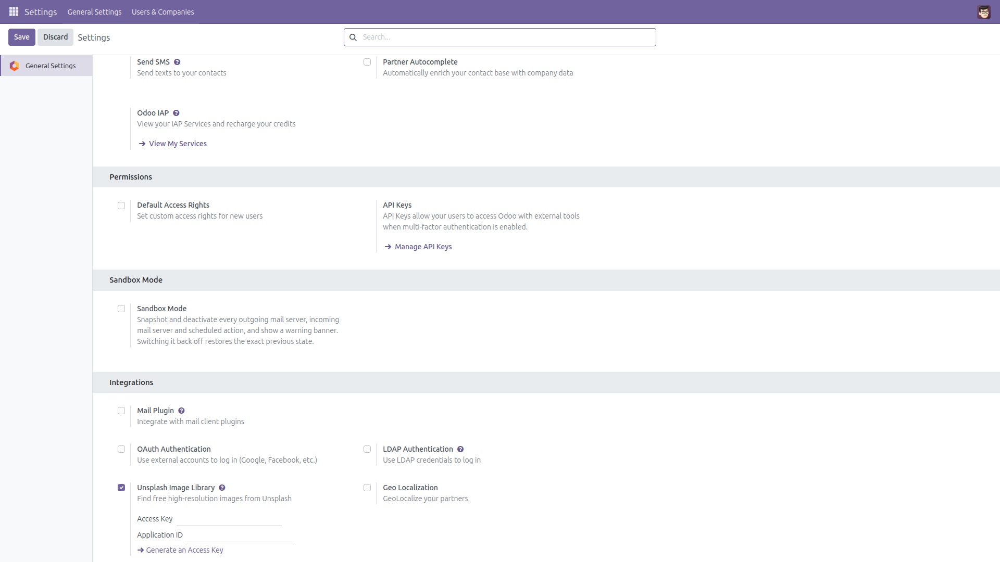
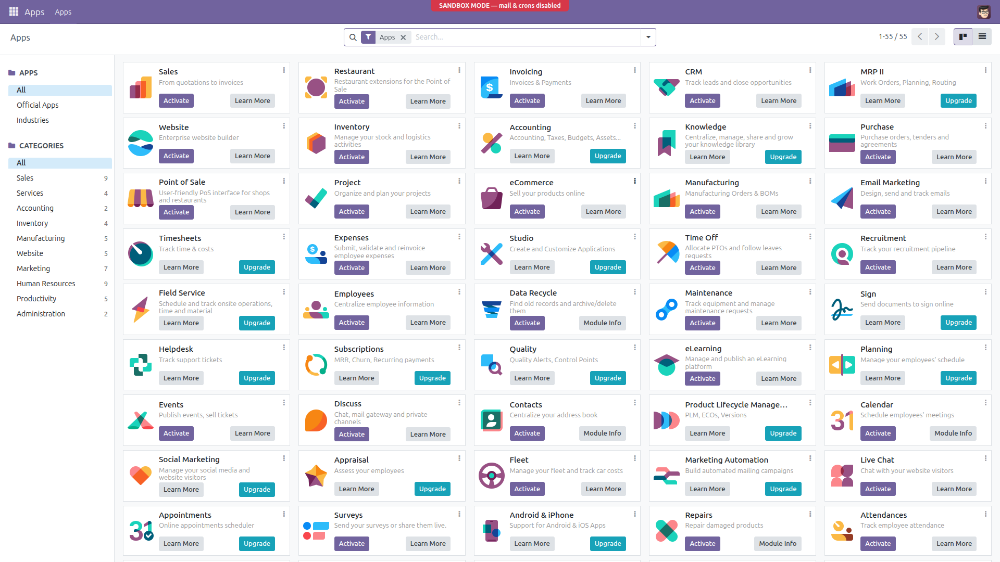
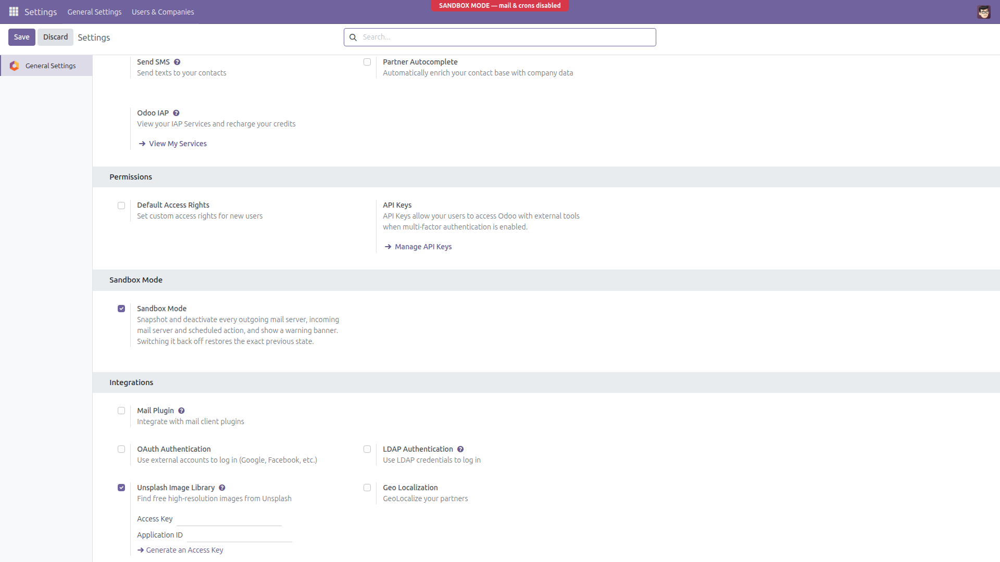

Sandbox Mode — Database Neutralize Toggle
One reversible switch that stops a restored database from sending real emails or running live scheduled actions.
Everyone has done it: a production copy is restored for testing, and minutes later it
mails a customer or runs a live cron. Odoo's own neutralize is command-line only,
exists only on 16.0 and later, and cannot be undone. This module gives you the same
safety as a single toggle in General Settings — and switching it back off restores
your exact previous configuration.
What it does
- Snapshot first: the active flag of every outgoing mail server, incoming mail server and scheduled action is saved before anything is touched.
- Neutralize: all outgoing mail servers, incoming mail servers and scheduled actions are deactivated in one click.
- Warning banner: a fixed red "SANDBOX MODE" banner is rendered server-side on every backend page — no JavaScript, no assets, pure inline CSS.
- Exact restore: switching the toggle off puts back the exact prior flags — a cron that was already disabled before stays disabled.
- Safe by design: enabling twice never overwrites the original snapshot; records deleted meanwhile are skipped; records created while sandboxed are left untouched.
- Admin only: everything is restricted to the Administration / Settings group, including direct RPC calls.
- Clean uninstall: uninstalling the module while Sandbox Mode is active automatically restores the saved state and removes the stored parameters — nothing is left neutralized behind.
Screenshots

The Sandbox Mode toggle in General Settings, off by default.

While sandboxed, every backend page carries the fixed red SANDBOX MODE banner.

Sandbox Mode enabled: the toggle is on and the warning banner is visible.
Installation
- Copy the
database_neutralize_toggle folder into your addons path.
- Restart the Odoo server.
- Activate developer mode, go to Apps, click Update Apps List.
- Search for "Sandbox Mode" and click Install.
Configuration
- Open Settings → General Settings as an administrator.
- Find the Sandbox Mode section.
- There is exactly one switch — nothing else to configure.
Usage
- After restoring a production copy, turn Sandbox Mode on and save. All mail servers and scheduled actions are snapshotted and deactivated, and the red banner appears.
- Test freely: no real emails leave through configured mail servers, no scheduled action fires.
- To leave sandbox, turn the toggle off and save. The exact previous active flags are restored and the banner disappears.
Honest limitations
- It deactivates all scheduled actions, with no exceptions — including Odoo's own maintenance crons, for as long as sandbox mode is on.
- It cannot block mail sent through a local
sendmail binary when no outgoing mail server record is used.
- It does not neutralize payment providers, webhooks or any other outbound integration — only mail servers and scheduled actions.
- The banner appears in the backend web client; it is not shown on website/portal pages.